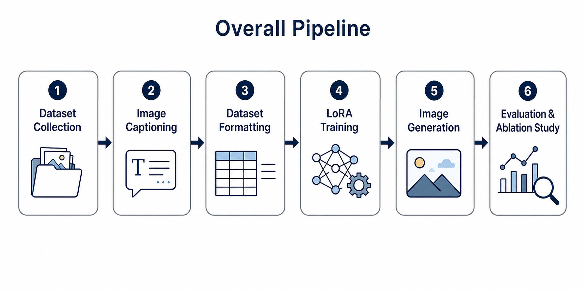
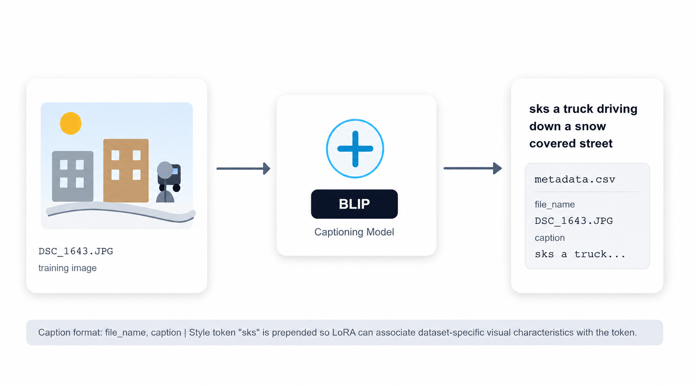
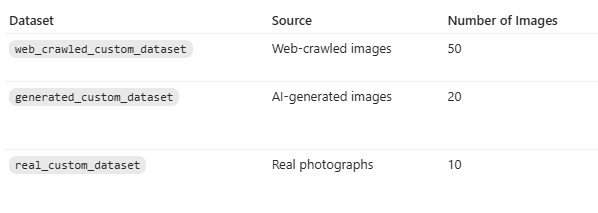
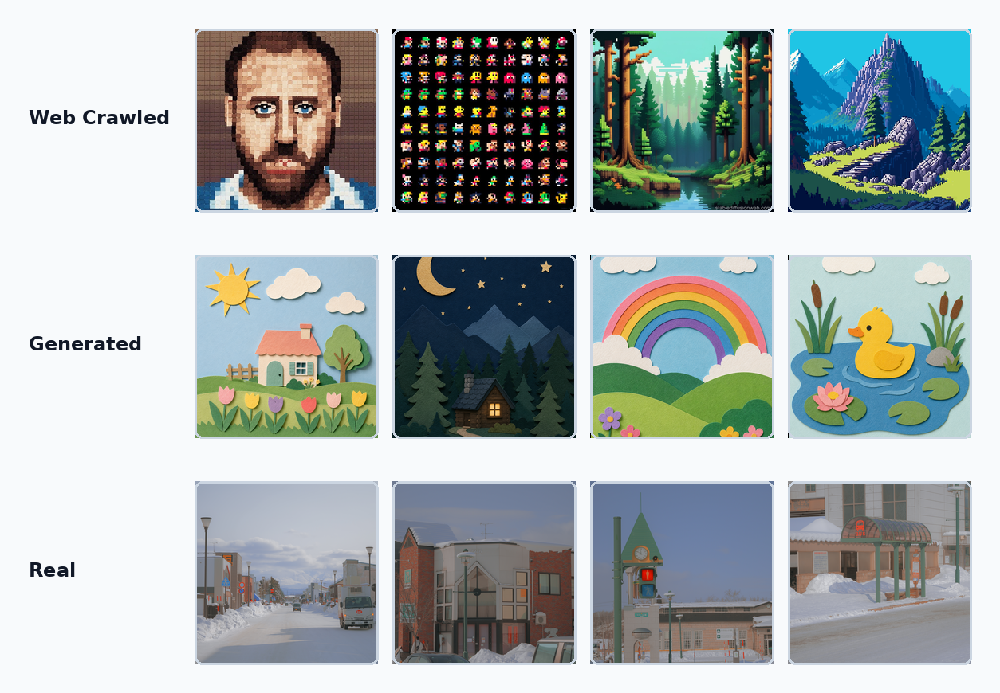
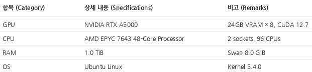
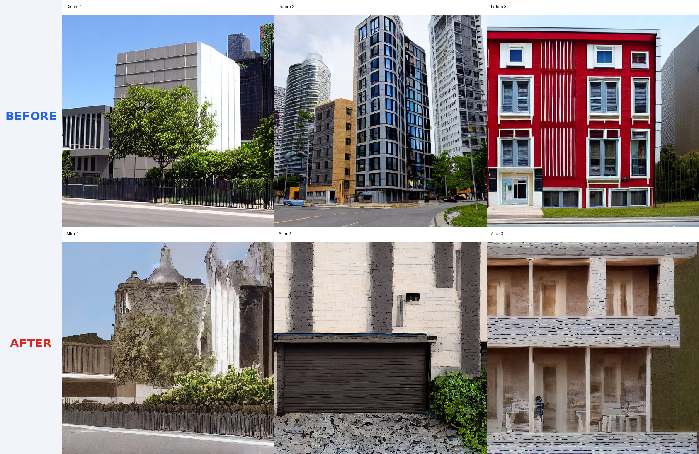
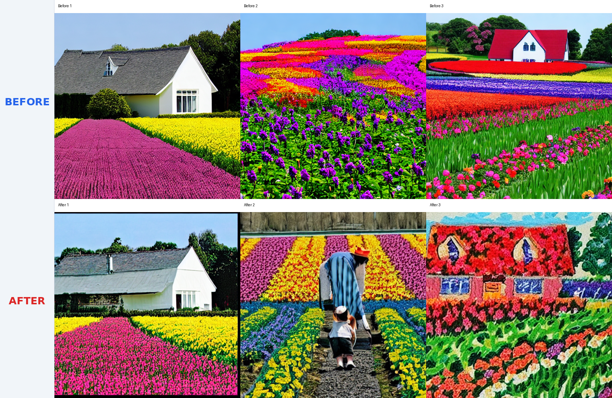
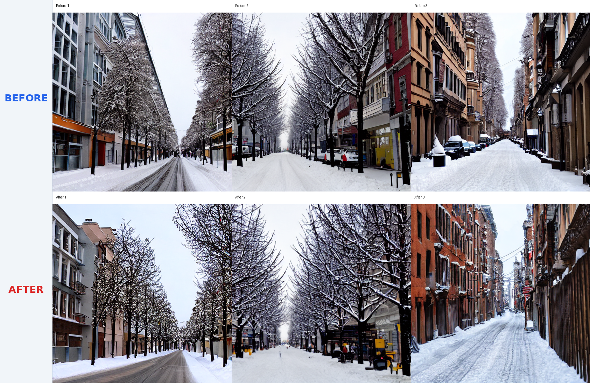
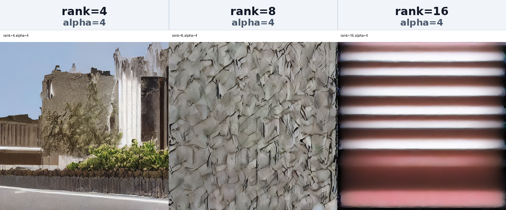
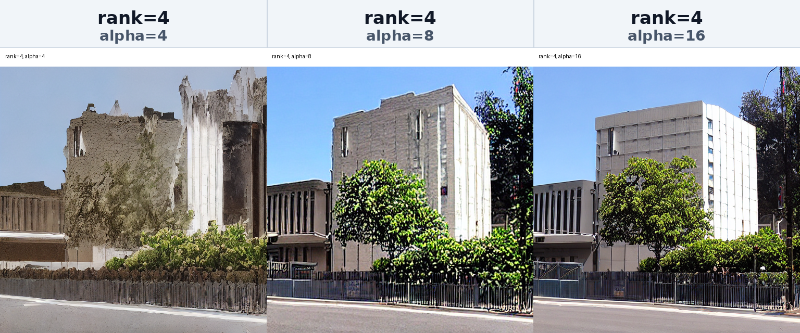

Project Report
Customizing LoRA를 활용한 Diffusion Model Style Adaptation
요약 (Summary)
본 프로젝트에서는 Stable Diffusion 기반 Diffusion Model에 대해 LoRA(Low-Rank Adaptation)를 활용한 커스텀 스타일 학습을 수행하였다. 세 가지 서로 다른 데이터셋(실제 이미지, 웹 크롤링 이미지, 생성 이미지)을 직접 구축하고, 각 데이터셋에 대해 독립적인 LoRA 모델을 학습하였다. 또한 LoRA rank 및 scaling factor(alpha)에 대한 Ablation Study를 수행하여 생성 품질 변화와 학습 특성을 분석하였다. 실험 결과, 데이터셋의 특성과 LoRA configuration에 따라 생성 이미지의 스타일 보존 능력과 일반화 성능이 크게 달라짐을 확인하였다.
Keywords LoRA, Diffusion Model, Stable Diffusion, Fine-tuning
1. 서론 (Introduction)
Diffusion 기반 이미지 생성 모델은 높은 품질의 이미지를 생성할 수 있지만, 특정 스타일이나 개인화된 도메인에 맞추기 위해 전체 모델을 fine-tuning하는 방식은 많은 GPU 메모리와 학습 비용을 요구한다. 특히 Stable Diffusion과 같은 대규모 생성 모델에서는 전체 가중치를 업데이트하지 않고도 원하는 스타일을 반영할 수 있는 효율적인 학습 방식이 필요하다.
본 프로젝트는 이러한 문제를 해결하기 위해 LoRA(Low-Rank
Adaptation)를 활용한 Stable Diffusion 스타일 적응 파이프라인을
구현하였다. 웹 크롤링 이미지, 생성 이미지, 실제 촬영 이미지로
구성된 세 가지 custom dataset을 구축하고, BLIP 기반 captioning을
통해 각 이미지에 대한 metadata를 생성하였다. 이후
runwayml/stable-diffusion-v1-5 모델의 UNet attention
layer에 LoRA adapter를 적용하여 데이터셋별 스타일 학습을
수행하였다.
최종 목표는 단순히 LoRA를 적용하는 것을 넘어, 데이터셋의 특성과 LoRA configuration이 생성 결과에 어떤 영향을 미치는지 분석하는 것이다. 이를 위해 학습 전후 생성 이미지를 비교하고, rank와 alpha 값을 변화시키는 ablation study를 수행하였다.
2. 작업 정의 (Task Formulation)
2.1 전체 파이프라인 구조
- Dataset Collection: 웹 크롤링 이미지, 생성 이미지, 실제 촬영 이미지로 구성된 custom dataset을 구축한다.
- Image Captioning: BLIP 기반 captioning 모델을 사용하여 각 이미지에 대응되는 텍스트 설명을 자동 생성하고 caption metadata로 정리한다.
- Dataset Formatting: 이미지와 caption을 Hugging Face
imagefolder형식에 맞게 정리하고metadata.csv를 구성한다. - LoRA Training: Stable Diffusion v1.5의 UNet attention layer에 LoRA adapter를 적용하여 dataset별 시각적 특성을 학습한다.
- Image Generation: 학습된 LoRA weight를 base Stable Diffusion pipeline에 적용하여 prompt 기반 이미지를 생성한다.
- Evaluation & Ablation Study: LoRA 적용 전후 결과를 비교하고, rank와 alpha 변화에 따른 생성 결과와 스타일 반영 정도를 분석한다.

2.2 Dataset 구성 방식
본 프로젝트에서는 LoRA 기반 스타일 적응 성능을 비교하기 위해
서로 다른 특성을 가진 세 가지 custom dataset을 구축하였다. 각
데이터셋은 train 폴더 안에 이미지 파일을 저장하고,
이미지 파일명과 caption을 포함하는 metadata.csv를
함께 구성하여 Hugging Face imagefolder 형식으로
불러올 수 있도록 정리하였다.
- Dataset A - Web Crawled Images: 웹에서 수집한 pixel art 계열 이미지로 구성하여 웹 이미지 기반 스타일 특징을 얼마나 반영할 수 있는지 확인하였다.
- Dataset B - Generated Images: paper craft 또는 paper cutout 계열의 스타일을 의도했으며, 집, 꽃밭, 동물, 풍경 등 다양한 object를 포함한다.
- Dataset C - Real Images: 눈이 내린 거리, 건물, 야외 풍경 등 현실 이미지의 질감과 조명 조건을 포함한다.
2.3 Captioning 및 Metadata 구성
Caption 생성에는 BLIP 기반 image captioning 모델인
Salesforce/blip-image-captioning-large를 사용하였으며,
processor는 Salesforce/blip-image-captioning-base를
사용하였다. 각 데이터셋의 train 폴더에 포함된 이미지들을
순회하면서 BLIP 모델이 이미지 내용을 설명하는 caption을 자동
생성하고, 이미지 파일명과 생성된 caption을 하나의 행으로 묶어
metadata.csv에 저장하였다.

3. 데이터 선정 (Dataset)
3.1 데이터셋 구성
세 데이터셋은 각각 웹 크롤링 이미지, AI 생성 이미지, 실제 촬영 이미지로 구성되어 있으며, 서로 다른 데이터 분포에서 LoRA 학습 결과가 어떻게 달라지는지 비교하기 위해 사용하였다.

3.2 데이터 전처리
모든 이미지는 데이터셋별 train 폴더에 저장하였으며,
Hugging Face imagefolder 형식으로 불러올 수 있도록
폴더 구조를 구성하였다. 학습 과정에서 각 이미지는 RGB 형식으로
변환된 뒤 Resize, CenterCrop,
RandomHorizontalFlip, ToTensor(),
Normalize([0.5], [0.5])를 거쳐 Stable Diffusion
학습에 적합한 범위로 정규화되었다.
텍스트 조건을 구성하기 위해 BLIP caption에서 a photo of
prefix를 제거하고 style token인 sks를 앞에 추가하였다.
웹/생성 이미지 데이터셋에서는 스타일 단어가 일반 의미로 분산되지
않도록 caption을 조정했고, 실제 이미지 데이터셋에서는 장면과
분위기를 보존하는 방향으로 caption을 구성하였다.
3.3 데이터 시각화
Web Crawled dataset은 다양한 웹 이미지 기반의 시각적 특징을 포함하고, Generated dataset은 paper-craft 스타일 방향성을 의도해 구성되었으나 다양한 object를 포함한다. Real dataset은 눈이 내린 거리와 건물을 촬영한 실제 이미지로 구성된다.

4. 모델 선정 (Model)
4.1 Stable Diffusion
본 프로젝트에서는 base image generation model로
runwayml/stable-diffusion-v1-5를 사용하였다. Stable
Diffusion은 text-to-image generation을 수행하는 latent diffusion
model로, 입력 prompt를 CLIP text encoder를 통해 embedding으로
변환한 뒤 UNet denoising network가 latent space에서 점진적으로
noise를 제거하여 이미지를 생성한다.
전체 모델을 직접 fine-tuning하지 않고 UNet의 attention layer에 LoRA adapter를 추가하여 custom dataset의 스타일 정보를 학습하도록 구성하였다. 이를 통해 base model이 가진 일반적인 이미지 생성 능력은 유지하면서도, 적은 수의 추가 파라미터만으로 특정 데이터셋의 시각적 특징을 반영할 수 있도록 하였다.
4.2 LoRA (Low-Rank Adaptation)
LoRA는 사전학습 모델의 전체 파라미터를 직접 업데이트하지 않고, 기존 가중치에 저차원 보조 행렬을 추가해 학습하는 파라미터 효율적 미세조정 기법이다. 기본 모델의 원래 가중치는 고정한 채 LoRA 모듈의 파라미터만 갱신하므로 계산량과 메모리 사용량을 크게 줄일 수 있다.
Diffusion 모델 관점에서 LoRA는 주로 UNet의 attention 계층에 적용되며, 새로운 스타일이나 도메인 특성을 기존 생성 능력 위에 덧붙이는 방식으로 동작한다. 본 프로젝트에서는 rank와 alpha 설정이 스타일 강도, 세부 묘사력, 과적합 경향에 미치는 영향을 중점적으로 분석하였다.
4.3 Hugging Face Diffusers & PEFT
본 프로젝트는 Hugging Face Diffusers와 PEFT 라이브러리를 기반으로 LoRA 학습 파이프라인을 구성하였다. Diffusers는 Stable Diffusion 계열 모델을 표준화된 인터페이스로 불러오고, 노이즈 스케줄러 및 학습·추론 절차를 모듈화하여 실험 재현성을 높여준다. PEFT는 LoRA 어댑터를 핵심 학습 단위로 사용해 GPU 메모리 사용량과 학습 시간을 줄이면서도 스타일 적응 성능을 확보할 수 있도록 한다.
5. 실험 환경 및 결과
5.1 실험 환경
실험은 NVIDIA RTX A5000 GPU와 1.0 TiB RAM을 갖춘 Ubuntu Linux 서버에서 수행하였다.

5.2 Before/After LoRA 결과 비교
동일한 prompt와 seed 조건에서 base Stable Diffusion v1.5 모델의
생성 결과와 LoRA 적용 후의 생성 결과를 비교하였다. Web Crawled
dataset에서는 a building, Generated dataset에서는
a house in a flower field, Real dataset에서는
a city street in winter를 사용하였다. 모든 비교
실험은 동일한 seed=2015, inference step 30, guidance
scale 7.5 조건에서 수행하였다.

Web Crawled dataset의 경우, LoRA 적용 후 건물의 외벽 질감과 형태가 학습 이미지의 스타일에 더 강하게 반영되는 경향을 보였다. 다만 일부 결과에서는 건물 구조가 과도하게 단순화되거나 왜곡되는 모습도 나타났으며, 이는 웹에서 수집한 이미지의 스타일과 내용이 다양하게 섞여 있기 때문으로 해석할 수 있다.

Generated dataset의 경우, 학습 데이터는 paper-craft 또는 paper-cutout 스타일을 의도하여 구성하였지만, LoRA 적용 후 생성 결과에서 해당 스타일이 명확하게 재현되지는 않았다. 이는 caption이 이미지 content 중심으로 생성되었고 paper-cutout 스타일을 설명하는 표현이 충분히 학습 조건에 반영되지 않았기 때문으로 해석할 수 있다.

Real dataset에서는 LoRA 적용 후 Before보다 건물 외벽의 갈색·붉은색 계열 톤과 부드러운 조명감이 강조되었고, 눈이 있는 장면 속에서도 상대적으로 따뜻한 분위기가 나타났다. 종합적으로 LoRA는 전체 Stable Diffusion 모델을 fine-tuning하지 않고도 각 dataset이 가진 시각적 특성을 생성 결과에 반영할 수 있음을 확인하였다.
5.3 Ablation Study
LoRA configuration이 생성 결과에 미치는 영향을 확인하기 위해
ablation study를 수행하였다. 실험은 대표 데이터셋인 Web Crawled
dataset을 기준으로 진행하였으며, prompt는 a building,
학습 step은 2000으로 고정하였다. Rank ablation에서는 alpha=4를
고정하고 rank=4, 8, 16 조건을 비교했으며, Alpha ablation에서는
rank=4를 고정하고 alpha=4, 8, 16 조건을 비교하였다.
5.3.1 Rank Ablation

Rank는 LoRA adapter가 학습할 수 있는 표현 공간의 크기를 결정하는 값이다. 실험 결과 rank=4에서는 건물 형태와 외벽 질감이 비교적 안정적으로 유지되었으나, rank=8에서는 표면 texture가 과도하게 강조되는 경향이 나타났다. rank=16에서는 이미지가 건물의 구조를 유지하기보다 추상적인 패턴이나 흐릿한 줄무늬 형태로 변형되어, 높은 rank가 항상 더 나은 결과를 보장하지는 않음을 확인하였다.
5.3.2 Alpha Ablation

Alpha는 LoRA가 base model 출력에 영향을 미치는 강도를 조절하는 역할을 한다. 실험 결과 alpha=4에서는 학습 데이터의 질감이 비교적 강하게 반영되었고, alpha=8과 alpha=16에서는 base model의 건물 구조가 더 명확하게 유지되는 모습을 보였다. 본 실험 설정에서는 rank 변화가 alpha 변화보다 생성 결과에 더 큰 영향을 주었다.
종합적으로 ablation study를 통해 LoRA의 rank와 alpha 설정이 생성 결과의 스타일 강도와 구조 보존 정도에 영향을 준다는 점을 확인하였다. 특히 rank가 지나치게 커질 경우 학습 데이터의 texture나 pattern이 과도하게 반영되어 prompt가 요구하는 object structure가 약화될 수 있었다.
6. 논문 요약
6.1 LoRA: Low-Rank Adaptation of Large Language Models
LoRA는 대규모 사전학습 모델을 효율적으로 fine-tuning하기 위해 제안된 parameter-efficient adaptation 기법이다. 기존 full fine-tuning은 모든 모델 파라미터를 업데이트하기 때문에 초대형 모델에서는 학습 비용과 저장 공간 부담이 매우 크다. LoRA는 사전학습된 weight는 고정하고, 각 layer의 weight 변화량만 low-rank matrix로 근사하여 학습한다.
논문에서는 LoRA가 다양한 언어 모델에서 full fine-tuning과 비슷하거나 더 나은 성능을 보이면서도 훨씬 적은 파라미터만 학습한다는 점을 실험적으로 보였다. 본 프로젝트에서는 이러한 LoRA의 장점을 Stable Diffusion 기반 이미지 생성 모델에 적용하였다.
6.2 Denoising Diffusion Probabilistic Models
DDPM은 이미지 생성 과정을 점진적으로 노이즈를 추가하는 forward process와, 노이즈가 섞인 이미지에서 다시 원본 이미지를 복원하는 reverse process로 정의한 diffusion 기반 생성 모델이다. 학습 목표는 각 timestep에서 모델이 실제로 추가된 noise를 정확히 예측하도록 하는 것이며, 일반적으로 noise prediction에 대한 MSE loss를 사용한다.
본 프로젝트에서 사용한 Stable Diffusion은 DDPM의 denoising 원리를 latent space로 확장한 Latent Diffusion Model 계열이다. Pixel 공간에서 직접 denoising을 수행하는 대신 VAE를 통해 이미지를 latent representation으로 변환한 뒤, UNet이 latent space에서 noise를 예측하고 제거한다.
7. 결론 및 향후 과제
본 프로젝트에서는 Stable Diffusion v1.5 기반 모델에 LoRA를 적용하여 커스텀 이미지 데이터셋에 대한 스타일 적응 실험을 수행하였다. 학습 파이프라인은 이미지 데이터셋 구성, BLIP 기반 caption 생성, Hugging Face imagefolder 형식의 metadata.csv 생성, LoRA 학습, 학습 전후 이미지 생성 비교, rank/alpha ablation study로 구성하였다.
실험에서는 web_crawled_custom_dataset, generated_custom_dataset, real_custom_dataset을 중심으로 서로 다른 특성의 데이터셋을 구성하였다. 웹 크롤링 데이터셋은 비교적 다양한 이미지 분포를 포함하고, 생성 이미지 데이터셋은 특정 스타일 방향성을 의도해 구성하였으나 object 구성이 다양해 스타일 재현 일관성에는 한계가 있었다. 실제 이미지 데이터셋은 직접 촬영된 사진 기반의 현실적인 분포를 가진다.
종합적으로 LoRA가 제한된 연산 자원에서도 Stable Diffusion 모델을 특정 스타일에 적응시키는 데 효과적인 방법임을 확인하였다. 다만 생성 품질은 LoRA 구조 자체뿐 아니라 이미지 데이터의 품질, caption의 정확도, 데이터셋의 일관성에 크게 의존하였다. 향후에는 데이터셋 정제 과정을 강화하고, caption 품질을 개선하며, CLIP score, 이미지 유사도, 프롬프트 정합도와 같은 정량 평가 지표를 추가할 필요가 있다.
8. 프로젝트 파일 구조
프로젝트 루트: Customizing-LoRA-for-Diffusion-Models
- 00_Customizing_LoRA.ipynb: 전체 실험 파이프라인 점검용 기본 노트북
- 01_dataset_training.ipynb: 데이터셋별 LoRA 학습 및 Before/After 비교 이미지 생성
- 02_ablation_rank.ipynb: rank 변화에 따른 ablation 실험
- 02_ablation_alpha.ipynb: alpha 변화에 따른 ablation 실험
- 03_test.ipynb: 학습된 LoRA/체크포인트 로드 후 프롬프트 기반 생성 테스트
- 04_monitor.ipynb: 학습 진행 상태, 로그, 중간 결과 모니터링
- experiment_utils.py: 데이터 전처리, 학습 루프, 추론/비교 이미지 생성 공통 유틸리티
- environment.yml: 재현 가능한 실험 환경 정의
- data/: 웹 수집 이미지, 생성 이미지, 실제 촬영 이미지 학습 데이터셋
- lora_experiments/: 데이터셋별 학습 결과, 비교 이미지, ablation 결과 저장 디렉터리
References
- Ho et al., "Denoising Diffusion Probabilistic Models", NeurIPS, 2020.
- Rombach et al., "High-Resolution Image Synthesis with Latent Diffusion Models", CVPR, 2022.
- Hu et al., "LoRA: Low-Rank Adaptation of Large Language Models", ICLR, 2022.
- Li et al., "BLIP: Bootstrapping Language-Image Pre-training for Unified Vision-Language Understanding and Generation", 2022.